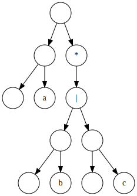
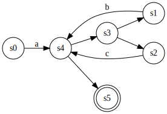
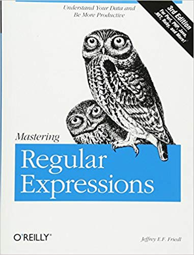
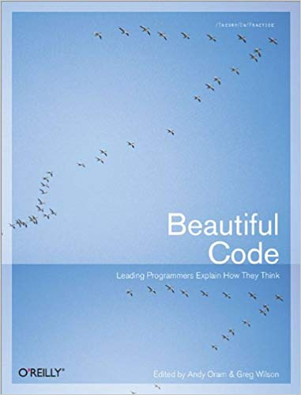
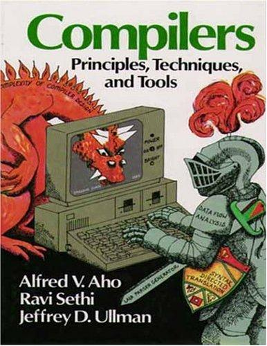

Understanding Regular Expressions
PyATL
Doug Hellmann
Create your other slides here
#!/usr/bin/env python3
def match(regexp, text):
if regexp and regexp[0] == '^':
return match_here(regexp[1:], text)
while text:
print('\nmatch({!r}, {!r})'.format(regexp, text))
if match_here(regexp, text):
return True
text = text[1:]
return False
def match_here(regexp, text):
print('match_here({!r}, {!r})'.format(regexp, text))
if not regexp:
print(' end of regexp')
return True
if len(regexp) > 1 and regexp[1] == '*':
print(' found star')
return match_star(regexp[0], regexp[2:], text)
if len(regexp) == 1 and regexp[0] == '$':
print(' testing end', len(text))
return len(text) == 0
if text and regexp and (regexp[0] == '.' or regexp[0] == text[0]):
return match_here(regexp[1:], text[1:])
return False
def match_star(c, regexp, text):
print('match_star({!r}, {!r})'.format(c, regexp, text))
while True:
print(' match_star loop')
if match_here(regexp, text):
return True
if c not in ['.', text[0]]:
break
text = text[1:]
return FalseParse Tree: a(b|c)*
NFA: a(b|c)*
Books
|  |  |  |
Articles
A Regular Expression Matcher
by Brian Kernighan and Rob Pike
Parsing regular expressions with recursive descent
by Matt Might
Regular Expression Matching Can Be Simple And Fast
by Russ Cox
Resources
dhellmann/presentation-understanding-regular-expressions
 This work is licensed under a Creativle Commons Attribution 4.0 International License.
This work is licensed under a Creativle Commons Attribution 4.0 International License.